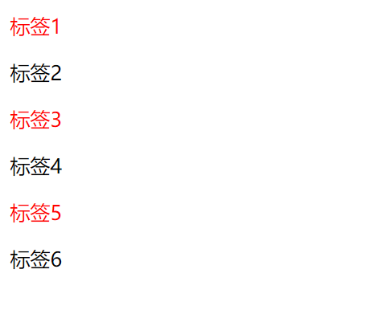

原文出处:本文由博客园博主心悦君兮君不知-睿提供。
原文连接:https://www.cnblogs.com/ruigege0000/p/11181211.html
原文连接:https://www.cnblogs.com/ruigege0000/p/11181211.html
一、子元素选择器
1.
（1）选中标签之中只有一个子元素的子元素，并且那个标签必须使我们格式中前面指定的标签才行
（2）格式：
标签：only-chirld{属性：值；}
（3）举例：
p:only-child{color:red;}
........省略代码..........
<p>我不是子元素</p>
<div>
<p>我是有一个元素的那个p标签</p>
</div>
<div>
<h1>我是有两个子元素的h1标签</h1>
<p>我是有两个子元素的那个p标签，作为对比</p>
</div>
<div>
<h1>我是有一个子元素的h1标签</h1>
</div>2.
（1）同级别中我们指定的标签中，只有这种类型一个的元素来指定格式
（2）格式
标签：only-of-type{属性：值；}
（3）举例
p:only-of-type{color:blue;}
<!--还用上面的代码-->
3.
（1）定义：同级别中所有标签中规则的且为指定标签的设置属性
（2）格式：
标签：nth-chirld(规则){属性：值：}
<!--其中“规则”可选：odd:奇数；even：偶数；xn+y,其中n是从0开始递增的整数，支持我们的公示-->
（3）例子：
<style>
p:nth-child(odd){
color:red;
}
</style>
<body>
<p>标签1</p>
<p>标签2</p>
<p>标签3</p>
<p>标签4</p>
<p>标签5</p>
<p>标签6</p>
4.
（1）定义：同级别中所有指定标签的且按规则选出的标签设置属性
（2）格式：
标签：nth-of-type(规则):{属性:值;}
<!--其中“规则”可选：odd:奇数；even：偶数；xn+y,其中n是从0开始递增的整数，支持我们的公示-->
（3）例子：
p:nth-of-type(even){color:red}
......省略代码.......
<h1>haode</h1>
<h1>haode</h1>
<h1>haode</h1>
<p>优秀1</p>
<p>优秀2</p>
<h1>haode</h1>
<p>优秀3</p>
<p>优秀4</p>5.应用点：我们的日历，这种有规则性的排版等
二、源码：
d77_only_chirld_selectord78_order_selector2
地址:
https://github.com/ruigege66/HTML_learning/tree/master
2.CSDN：https://blog.csdn.net/weixin_44630050（心悦君兮君不知-睿）
3.博客园：https://www.cnblogs.com/ruigege0000/
4.欢迎关注微信公众号：傅里叶变换，后台回复“礼包”获取Java大数据学习视频礼包